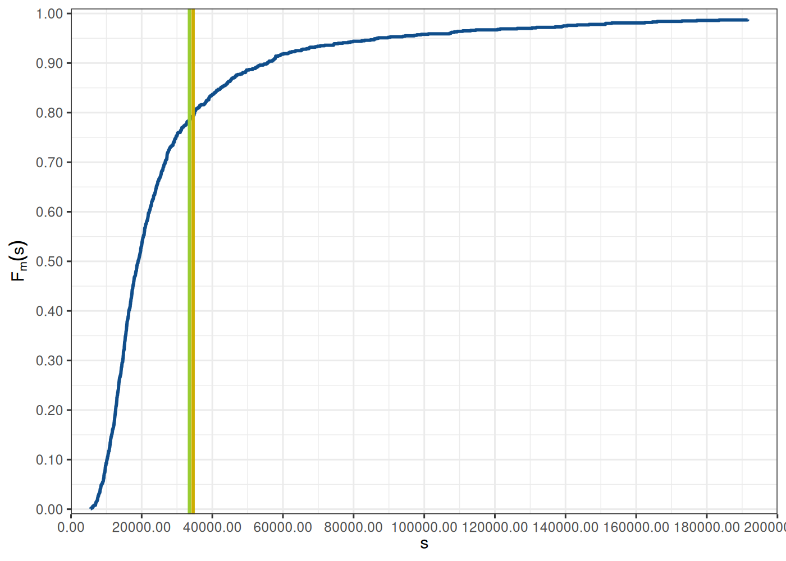

Capítulo 6 Tarificación
Para realizar la tarificación de un producto de seguro, además de estudiar y estimar el comportamiento futuro de los reclamos totales \(S\), es necesario también tomar en cuenta el capital \(K\) destinado para hacer frente al riesgo subscrito y los costos generales \(G\)
6.1 Medidas de riesgo
Definición 3.7 (Medida de riesgo coherente) Una medida de riesgo coeherente es una función \(\rho: \mathbb{R}\longrightarrow \mathbb{R}\), que satisface la siguientes propiedades:
Homogenidad positiva, para cualquier \(a > 0\) \[ \rho( a X ) = a \rho( X ) \]
Invarianza ante las traslaciones, para cualquier \(a > 0\) \[ \rho( \alpha X + a ) = \rho( \alpha X ) + a \]
Monotonicidad, Si \(X \leq Y\) \[ \rho( X ) \leq \rho( Y ) \]
Sub-aditividad \[ \rho( X + Y ) \leq \rho( X ) + \rho( Y ) \]
En lo que continúa citamos algunas de las medidas de riesgo usualmente utilizadas.
Definición 6.1 (Valor en riesgo) Dada una variable aleatoria a valores reales \(X\), el valor en riesgo (value at risk) de \(X\) al nivel de probabilidad \(\alpha \in (0,1)\) está dado por \[ \operatorname{VaR}_{\alpha}( X ) = \inf\left\{ x \in \mathbb{R}\middle| F_X( x ) > \alpha \right\} \]
Proposición 6.1 Si la función de distribución acumulada \(F_X\) es continua, entonces \(\operatorname{VaR}_{\alpha}( X ) = F_X^{-1}( \alpha )\).
Por otra parte, \(\operatorname{VaR}_{\alpha}\) para cualquier \(\alpha\) no es una medida de riesgo sub-aditiva.
Definición 6.2 (Valor en riesgo en la cola) Dada una variable aleatoria a valores reales \(X\), el valor en riesgo en la colas (tail value at risk) de \(X\) al nivel de probabilidad \(\alpha \in (0,1)\) está dado por \[ \operatorname{TVaR}_{\alpha}( X ) = \frac{1}{1-\alpha} \int\limits_{\alpha}^1 \operatorname{VaR}_u( X )\ du \]
Proposición 6.2 (Coherencia de la medida TVaR) La medida de riesgo \(\operatorname{TVaR}_{\alpha}\) es una medida de riesgo coherente si la variable aleatoria sobre la cual se mide es una variable aleatoria continua.
Definición 6.3 (Esperanza condicional en la cola) Dada una variable aleatoria a valores reales \(X\), la esperanza condicional en la cola (conditional tail expectation) de \(X\) al nivel de probabilidad \(\alpha \in (0,1)\) está dado por \[ \operatorname{CTE}_{\alpha}( X ) = \mathbb{E}\left[ X \middle| X > \operatorname{VaR}_{\alpha}( X ) \right] \]
Proposición 6.3 Si la función de distribución acumulada \(F_X\) de la variable aleatoria \(X\) es continua, entonces se tiene la siguiente igualdad \[ \operatorname{CTE}_{\alpha}( X ) = \operatorname{TVaR}_{\alpha}( X ) \]
Definición 6.4 (Valor en riesgo condicionado) Dada una variable aleatoria a valores reales \(X\), el valor en riesgo condicionado (conditional value at risk) de \(X\) al nivel de probabilidad \(\alpha \in (0,1)\) está dado por \[ \operatorname{CVaR}_{\alpha}( X ) = \mathbb{E}\left[ X - \operatorname{VaR}_{\alpha}( X ) \middle| X > \operatorname{VaR}_{\alpha}( X ) \right] = \operatorname{CTE}_{\alpha}( X ) - \operatorname{VaR}_{\alpha}( X ) \]
Definición 6.5 (Déficit esperado) Dada una variable aleatoria a valores reales \(X\), el déficit esperado (expected shortfall) de \(X\) al nivel de probabilidad \(\alpha \in (0,1)\) está dado por \[ \operatorname{ES}_{\alpha}( X ) = \mathbb{E}\left[ \max\left( X - \operatorname{VaR}_{\alpha}( X ), 0 \right) \right] \]
Definición 6.6 (Valor en riesgo entrópico) Dada una variable aleatoria a valores reales \(X\), el valor en riesgo entrópico (entropic value at risk) de \(X\) al nivel de probabilidad \(\alpha \in (0,1)\) está dado por \[ \operatorname{EVaR}_{\alpha}( X ) = \inf\left\{ \frac{1}{t} \ln\left( \frac{M_X( t )}{1 - \alpha} \right) \middle| t > 0 \right\} \]
Proposición 6.4 (Coherencia de la medida EVaR) La medida de riesgo \(\operatorname{EVaR}_{\alpha}\) es una medida de riesgo coherente.
Ejemplo 6.1 Podemos considerar el caso particular donde todos los reclamos se suponen independientes e idénticamente distribuidos (i.i.d), en este caso con distribución \(X_i \rightsquigarrow LN(\mu,\sigma)\)
Code
set.seed(94312)
u <- 4
s <- 0.5
n <- 1e4
X <- rlnorm( n, meanlog = u, sdlog = s )
alpha <- seq( 0, 1, 0.01 )
VaRX <- quantile( X, probs = alpha, names = FALSE )
TVaRX <- sapply(
1:length( VaRX ),
FUN = function( i ) ifelse( alpha[ i ] < 1, ( 1 / ( 1 - alpha[ i ] ) ) * mean( X * ( X > VaRX[ i ] ) ), max( X ) ) )Code

6.2 Tarificación en grandes términos
La tarificación que conlleva a la selección de la prima \(\Pi\) debe tomar en cuenta como se manejan y equilibran los activos y pasivos en el negocio asegurador.
Pasivos
Capitales propios
Reservas técnicas
Reservas para otros riesgos
Deudas o depósitos en dinero recibidos por cesiones
Otras deudas por pagar
Activos
Capital suscrito no desembolsado
Activos no materiales
Inversiones
Parte de reaseguros en reservas técnicas
Deudas por cobrar
Otros activos
En el proceso de tarificación no es pertinente incluir todos los activos de la empresa, ya que muchos de estos no tienen la liquidez necesaria como para ser considerados un tipo de activo viable para la tarificación. Tampoco se toma en cuenta el dinero recibido por la cesión de primas en un ramo en particular, ya que esto constituye un nivel más arriba propio del negocio reasegurador.
En términos generales se busca equilibrar el resultado operativo del ramo de negocio \(R\) a lo largo de la vida del ramo. El resultado \(R\) a su vez está dado por la siguiente relación: \[ R = \Pi + I - S - G - K \] donde las variables a considerarse en principio son:
\(\Pi\) Ingreso por primas
\(I\) Ingreso por inversiones
\(S\) Pago de siniestros
\(G\) Gastos agregados, incluyendo gastos de emisión, operativos, gastos por reclamos
\(K\) Coste de capital, esencialmente el retorno mínimo esperado por los inversores sobre el capital invertido.
En varias ocasiones el ciclo del negocio puede ser corto y no permite considerar un ingreso por inversiones \(I = 0\). \[ R = \Pi - S - G - K \]
Sería ideal que a lo largo de la vida del ramo el resultado mantenga \(R > 0\), pero al tratarse de un negocio que depende de la aleatoriedad de los reclamos, es bastante complicado encontrar un costo de capital \(K\) y una prima \(\Pi\) que siempre asegure ante todo escenario que se mantenga la positividad. Ante este riesgo continuo se busca minimizar la probabilidad de ruina \(R < 0\) a un nivel \(\alpha > 0\) adecuado \[ P( R < 0 ) < \alpha \]
Muchas de las veces se parte del principio de equilibrio financiero 3.5.4, donde se busca la igualdad \(\mathbb{E}[R] = 0\), la misma implica la siguiente relación: \[ \begin{eqnarray*} 0 & = & \mathbb{E}[R] \\ 0 & = & \mathbb{E}[R\mid R \geq 0]P( R \geq 0 ) + \mathbb{E}[R\mid R < 0]P( R < 0 ) \\ \mathbb{E}[R\mid R \geq 0]P( R \geq 0 ) & = & -\mathbb{E}[R\mid R < 0]P( R < 0 ) \\ \frac{P( R < 0 )}{P( R \geq 0 ) } & = & -\frac{\mathbb{E}[R\mid R \geq 0]}{\mathbb{E}[R\mid R < 0]} \end{eqnarray*} \] en el equilibrio financiero, la proporción de la probabilidad de ruina respecto de la probabilidad de no estar en ruina es igual a la proporción entre la esperanza condicional del resultado cuando no se produce la ruina respecto de la esperanza condicional cuando si se produce la ruina.
Un modelo puede estar equilibrado financieramente \(\mathbb{E}[R] = 0\), pero se desconoce la probabilidad de ruina \(P( R < 0)\), esta podría ser muy grande. La razón anterior permite estimar la relevancia de la probabilidad de ruina en un modelo equilibrado, con el uso de las esperanzas condicionales.
Es usual asumir que la única parte aleatoria de \(R\) viene dada por el valor de los reclamos totales, en razón de esto se tiene: \[ \mathbb{E}[ R ] = \mathbb{E}[ \Pi - S - G - K ] = \Pi - \mathbb{E}[S] - G - K \]
El coste de capital \(K\) como ya lo mencionamos es el retorno mínimo esperado por los inversores sobre el capital invertido. Usualmente este capital puede ser visto como un porcentaje \(r > 0\) que se toma sobre el capital colocado para mantener un nivel de solvencia adecuado sobre el valor esperado \(\mathbb{E}[S]\) del total de reclamos \(S\). Para ello se suele utilizar precisamente una medida de medida de riesgo \(\rho\) que permita mantener el nivel de solvencia. \[ K = r\left( \rho( S ) - \mathbb{E}[S] \right) \] con esta perspectiva \[ \mathbb{E}[ R ] = \mathbb{E}\left[ \Pi - S - G - r\left( \rho( S ) - \mathbb{E}[S] \right) \right] = \Pi - \mathbb{E}[S] - G - r \left( \rho(S) - \mathbb{E}[S] \right) \] Lo que se busca es evitar la ruina y por tanto se busca cubrirse ante el evento \(R < 0\), desde una perspectiva probabilista esto se puede realizar seleccionando un nivel de conbertura \(\alpha > 0\), que acote la probabilidad del evento de ruina. \[ P( R < 0 ) = P( \Pi - S - G - K < 0 ) = P\left( \Pi - S - G - r\left( \rho(S) - \mathbb{E}[S] \right) < 0 \right) < \alpha. \]
De la relación anterior se observa que una vez seleccionado el nivel de cobertura \(\alpha\) y la medida de riesgo \(\rho\), las variables correspondientes a la prima \(\Pi\) y a los gastos \(G\) quedan libres, de ahí resulta un margen que permite seleccionar la prima más óptima para un producto de seguro, así como también optimizar los gastos \(G\). Este proceso de selección es precisamente lo que llamamos en este contexto como tarificación (pricing).
Razonando un poco más al respecto, si asumimos que se dispone de la distribución acumulada \(F_S\) de \(S\), se puede obtener las siguientes expresiones: \[ \begin{eqnarray*} P\left( \Pi - S - G - K < 0 \right) & < & \alpha \\ P\left( S > \Pi - G - K \right) & < & \alpha \\ 1 - P\left( S \leq \Pi - G - K \right) & < & \alpha \\ P\left( S \leq \Pi - G - K \right) & > & 1 - \alpha \\ F_S\left( \Pi - G - K \right) & > & 1 - \alpha \\ F_S\left( \Pi - G - K \right) & \in & \left( 1 - \alpha, +\infty \right), \qquad \text{la desigualdad anterior es equivalente a la inclusión}\\ \Pi - G - K & \in & F_S^{-1}\left( \left( 1 - \alpha, +\infty \right) \right),\qquad \text{por propiedades de la inversión de funciones}\\ \Pi & \geq & G + K + F_S^{-1}\left( 1 - \alpha \right), \qquad \text{com $F_S$ es creciente, mínimo se debe satisfacer la desigualdad} \end{eqnarray*} \] En especial cuando \(K = r\left( \rho(S) - \mathbb{E}[S] \right)\), la última desigualdad toma la forma \[ \Pi \geq G + r\left( \rho(S) - \mathbb{E}[S] \right) + F_S^{-1}\left( 1 - \alpha \right) \]
Así, en el caso anterior si se utiliza como medida de riesgo al mismo nivel de confianza \(1 - \alpha\), esto es \(\rho( S ) = \operatorname{VaR}_{1-\alpha}( S ) = F_S^{-1}( 1 - \alpha )\), la última igualdad se cumple si \(S\) es una variable aleatoria continua. \[ \Pi \geq G + (1 + r) F_S^{-1}\left( 1 - \alpha \right) - r \mathbb{E}[S] \]
Si en caso los gastos \(G\) son proporcionales a la prima \(G = \gamma \Pi\), para una constante \(\gamma > 0\), y seguramente \(\gamma < 1\) ya que es de esperar gastos no mayores a la misma prima, sino esto estaría en una situación insostenible donde los gastos son mayores a la cobertura del riesgo. Las desigualdades anteriores toman la forma: \[ \begin{eqnarray*} \Pi & \geq & \frac{r}{1 - \gamma} K + \frac{1}{1 - \gamma} F_S^{-1}\left( 1 - \alpha \right) \\ \Pi & \geq & \frac{r}{1 - \gamma} \left( \rho(S) - \mathbb{E}[S] \right) + \frac{1}{1 - \gamma} F_S^{-1}\left( 1 - \alpha \right) \\ \Pi & \geq & \frac{1 + r}{1 - \gamma} F_S^{-1}\left( 1 - \alpha \right) - \frac{r}{1 - \gamma} \mathbb{E}[S] \end{eqnarray*} \]
6.3 Prima
La prima es la cantidad de dinero que un individuo o entidad pagan por una póliza de seguro, la cual está diseñada para cubrir ciertos riesgos personales o comerciales.
La determinación de las primas por parte del asegurador hace uso de la mutualización del riesgo y diversificación, para así poder asumir la transferencia del riesgo por parte de sus asegurados. Así por tanto, es deseable que cualquier método que se utilice para la estimación de primas, se satisfaga, algunas propiedades importantes.
Sin consideramos dos riesgos a cubrir \(S_1\) y \(S_2\), entonces la función que estima \(\rho\) las primas sería aconsejable satisfaga las siguientes propiedades.
Si se decide cobrir por compleo dos riesgos \(S_1\) y \(S_2\) en un mismo producto, el valor de la prima deberá ser menor o igual al valor que se resultaría de cubrir cada uno de los riesgos con productos separados. \[ \rho( S_1 + S_2 ) \leq \rho( S_1 ) + \rho( S_2 ) \]
El asumir mayor riesgo debe tener como consecuencia el aumento de la prima \[ \rho( S_1 ) \leq \rho( S_1 + S_2 ) \] Esta propiedad implica que al configurar un producto de seguro con mejor cobertura, se espera una prima de mayor costo.
Si el riesgo a cubrir está limitado, es decir \(P( S \leq M ) = 1\), para un valor \(M > 0\), entonces jamás la prima será superior a \(M\) \[ \rho( S ) \leq M \] Esto se traduce a que ningún asegurado estará interesado en adquirir una póliza para cubrir un riesgo por encima del valor total asegurado.
Es así que hay algunos principios para la estimación de primas, aquí citamos algunos de los más conocidos:
Prima neta, o prima pura de riesgo \[ \Pi = \rho( S ) = \mathbb{E}[S] \approx \overline{S} \]
Prima de riesgo con recargo sobre la esperanza matemática \[ \Pi = \rho( S ) = (1 + \rho) \mathbb{E}[S] \approx (1 + \rho) \overline{S} \]
Prima de riesgo con recargo sobre la varianza \[ \Pi = \rho( S ) = \mathbb{E}[S] + \rho \mathbb{V}[S] \approx \overline{S} + \rho \sigma_S^2 \]
Prima de riesgo con recargo sobre la desviación \[ \Pi = \rho( S ) = \mathbb{E}[S] + \rho \sqrt{\mathbb{V}[S]} \approx \overline{S} + \rho \sigma_S \]
Prima de riesgo con principio exponencial para \(t > 0\) \[ \Pi = \rho( S ) = \frac{1}{2} \mathbb{E}\left[\exp(tS)\right] = \frac{1}{2} M_N\big( \ln M_X( t ) \big) \approx \frac{1}{m} \sum\limits_{i=1}^m \exp\left(t S_i\right) \]
Prima de percentiles para un valor de confianza \(\alpha \in [0,1]\) o prima de valor en riesgo \(VaR_\alpha\) \[ \Pi = \rho( S ) = \operatorname{VaR}_\alpha( S ) = F_S^{-1}( \alpha ) \]
Prima de valor en riesgo en la cola (Tail Value at Risk) \(TVaR_\alpha\). Es el promedio uniforme de todos los valores en riesgo \(VaR_u\), con \(u \geq \alpha\). \[ \Pi = \rho( S ) = \operatorname{TVaR}_\alpha( S ) = \frac{1}{1-\alpha} \int\limits_{\alpha}^1 \operatorname{VaR}_u( S )\ du \]
Ejemplo 6.1 Consideremos el caso donde todos los siniestros son igualmente distribuidos e independientes (i.i.d) \(X_i \rightsquigarrow Gamma( \alpha_i, \theta )\), para \(i \in \{1,\ldots,n\}\), el número de unidades aseguradas está dado por \(n \in \mathbb{N}\). Utilizaremos el modelo individual para la agregación de los reclamos y obtener el reclamo total \(S = \sum\limits_{i=1}^n X_i\).
Como todas las variables \(X_i\) siguen una ley \(Gamma( \alpha_i, \theta )\), sabemos que la familia \(Gamma\) es cerrada por adición, es decir, a suma de variables aleatorias con ley \(Gamma\) también sigue una ley \(Gamma\). En este caso en particular para el reclamo total tenemos que \(S \rightsquigarrow Gamma\left( \sum\limits_{i=1}^n \alpha_i, \theta \right)\).
Es de notar que para cada \(i\in \{1,\ldots,n\}\), la variable aleatoria \(X_i\) correspondiente al \(i\)-ésimo reclamo tiene como parámetro un diferente factor \(\alpha_i\), pero el mismo factor \(\theta\).
Ya que cada \(X_i \rightsquigarrow Gamma( \alpha_i, \theta )\), podemos calcular de forma determinista las experanzas de \(\mathbb{E}[X_i]\), para cada \(i \in \{1,\ldots,n\}\) y de igual forma podemos calcular la esperanza del reclamo total \(\mathbb{E}[S] = \sum\limits_{i=1}^n \mathbb{E}[X_i]\). Además como asumimos independencia entre los \(X_i\), la varianza de \(S\) también puede ser calculada fácilmente como \(\mathbb{V}[S] = \sum\limits_{i=1}^n \mathbb{V}[X_i]\).
También estamos en la capacidad de simular la variable \(S\) utilizando un algoritmo de aleatorio, para así aproximar los cálculos de sus momentos y otros estadísticos. Primeramente definamos los parámetros.
Code
La variable aleatoria del reclamo total \(S\) la podemos simular tomando una muestra i.i.d de tamaño \(m\), i.e. \(S_1,\ldots,S_m\) de la distribución \(Gamma\left( \sum\limits_{i=1}^n \alpha_i, \theta \right)\).
Prima pura:
Code
P <- ES
P <- mean( S )
alpha <- 0.95
P_avg <- ( 1 + alpha ) * ES
P_avg <- ( 1 + alpha ) * mean( S )
P_var <- ES + alpha * VS
P_var <- mean( S ) + alpha * var( S )
P_sde <- ES + alpha * SDS
P_sde <- mean( S ) + alpha * sd( S )
VaRS <- qgamma( alpha, shape = A, scale = theta )
P_VaR <- VaRS
P_VaR <- quantile( S, probs = alpha )
P_TVaR <- ( 1 / ( 1 - alpha ) ) * ( A * theta ) * ( 1 - pgamma( VaRS, shape = A + 1, scale = theta ) )
P_TVaR <- ( 1 / ( 1 - alpha ) ) * integrate( f = function( u ) qgamma( u, shape = A, scale = theta ), alpha, 1 )$value
P_TVaR <- mean( sapply( runif( m, alpha, 1 ), FUN = function( k ) qgamma( k, shape = A, scale = theta ) ) )
I <- as.numeric( S > VaRS )
P_TVaR <- mean( S * I ) / mean( I )6.4 Segmentación
En muchas ocasiones es necesario tener en cuenta algunas características asociadas al riesgo de asegurado, de tal forma que la prima sea lo más eficiente y adecuado según el riesgo cubierto y las características del mismo. La idea de segmentar la población es obtener grupos homogéneos con riesgos similares.